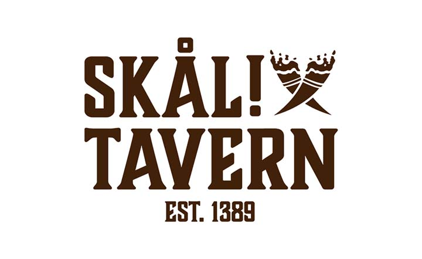

Skål Tavern
Most of my visual communications class in second semester I worked on one brand; Skål Tavern. Given my past experience as a chef, this was a really fun project to work on. I started off the assignment by creating a logo for the tavern, then slowly throughout the semester I expanded on the idea with more iconography, brand guideline, and mockup uses of the designs.